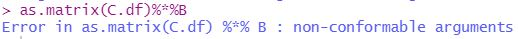
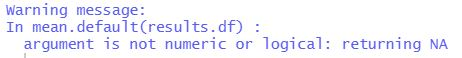
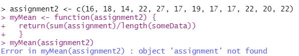
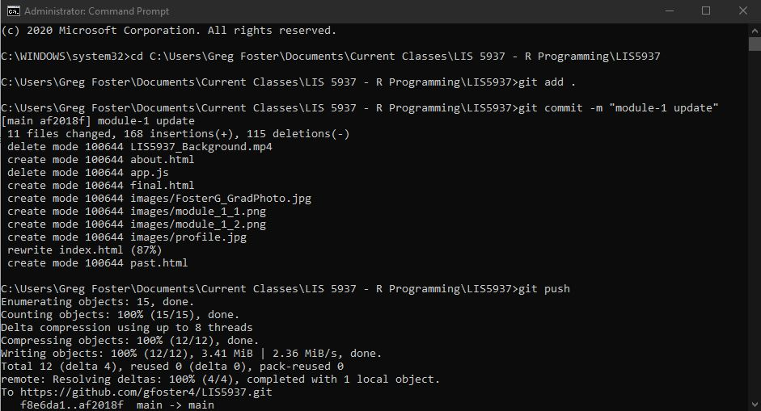

Module 03: Matrices and Data Frames
--January 26th, 2021--
This week's module was difficult. I continuously ran into errors with the prescribed operations in the assignment. While I worked around some of them, I was unable to complete
certain portions due to these unrelenting errors.
The most challenging portion was the matrix multiplication, as attempting to multiply a matrix is impossible to my knowledge with the dataset provided, unless the names column is taken away in order for the
matrix to recognize the numbers as integers. With this in mind, I attempted to recreate the example provided in the assignment, but could not for the life of me figure out how to make as.matrix(C.df)%*%B produce
anything other than errors. The error I kept receiving is shown below:

I did end up successfully obtaining the resulting matrix, but had to use a different method of multiplication by turning C.df into a matrix called C.m, then typing C.m * 1010101.
The only other error I consistently ran into was with finding the mean of data frames, as my version of R obstinantly refused to offer a value, printing out the message seen below:

If you see anything I did faulty to receive these errors please let me know, as of now I am unable to see what I have done wrong.
The full R file for this module can be viewed and downloaded below. Any lines returning an error have been commented out in order to successfully compile the pdf.
All updated files for this site and for the modules can be viewed at my github page here.
Module 02: Test and Fix the Function
--January 22nd, 2021--
For this homework assignment, the task was to test a function posted in Canvas and identify it's possible errors.
I ran the function with the predetermined dataset (the vector object named assignment2) and R-Studio returned the following error:

This error appears because the 'myMean' function calls upon two nonexistent data objects in its mean and length functions. It calls upon
an object named "assignment" in its mean function, and it calls upon an object named "someData" in its length function. For the myMean function to
properly compute the mean of "assignment2", it needs to call upon "assignment2" in both the mean and length functions within it.
I fixed the errors and wrote a new function named "myWorkingMean" that properly computes the mean of "assignment2", shown below:

I also tested the result of "myWorkingMean" against R's built in "mean" function, and they returned the same values. This can be seen in the image above.
The full R file for this module can be viewed and downloaded below. The "myMean" function had to be commented out to successfully compile the file since it runs an error.
All updated files for this site and for the modules can be viewed at my github page here.
Module 01: First Assignment
--January 11th, 2021--
This is my first homework post for R programming in graduate school, very excited to be here!
My GitHub repository can be found here.
With the instruction in this week's module I successfully configured github so I can now use the command line to
update my repository, shown below.
